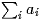

私がブログを書き始めた理由
ブログがある以前、または、ブログが有名になる以前から、ホームページをブログのようなシステムで作りたいと思っていました。
私がインターネットで記事を書き始めたのは、2ch もないころで、今は一般人にはほとんど使われてない NetNews に投稿していました。ただ、投稿していた時期は短く、いっぱいミスを犯して恥ずかしかったのと、自意識過剰であったため、どうも別名で書いている私の書き込みに、私の身近な知人が良くない影響を受けてる気がして、書くのをやめました。(いわゆる草の根ネットがまだあった時代で、私も非常にローカルなものには参加していました。)
何より記事の修正ができること、さらにあくまで個人的な意見であることが良くわかるようになることを求め、今でいうところのブログのようなシステムが欲しいと思うようになりました。
少くとも当時は、プロバイダーがサーバーを立てるのを規制し、また、その規制を無視しても Dynamic DNS がなかったので、事実上、自らサーバーを立てるには相当のコストを覚悟しなければなりませんでした。
安価で CGI のための Perl スクリプトや Shell が使えるホストもあり、実際アカウントは持っていたのですが、スピードに相当気を使わなければなりませんでした。
いずれにしろ、システムを一から作るのはとても大変で、さらにそのシステムに見合うだけのネタ(記事)を作るのも大変です。
先にネタを作りながら、システムについてはあとまわしにしていたところ、精神分裂病にかかりました。退院してもしばらくは PC を触れませんでした。
実家に帰ったあと、ブログという言葉を頻繁に聞くようになりましたが、はじめは日記に毛が生えたぐらいのシステムとしか認識がありませんでした。
その後、ホームページのシステムをもう一度作り始めようとしたとき、よくよく考えると、私がやろうとしていたことの半分はブログのシステムでできることがわかりました。
そして、ブログでできないもう半分のシステムを作ったからこそ、今、ブログをはじめたわけです。
本当は、そのシステムが公開できるようになるまで、ブログをはじめるのを遅らせようと思っていたのですが、思いのほかドキュメントの作成と、Perl スクリプトを読み易くする作業に手間どり、2006 年になった段階で、他のソフトウェアプロジェクトも同時に進めることにしたため、先にブログをはじめることに決めました。
で、残り半分のシステムとはテキストを HTML に変換するシステムです。最近の掲示板システムでは、テキストを入力すると、勝手に箇条書きにしてくれたり、引用部分を抜き出して成型したりしますよね？ああいったシステムのちょっと豪華なものを作ったわけです。
たとえば、次のようなソースをエディットする。
あなたはこう書きました。
> 1. 目標 -- 1000 円
> 2. 達成 -- 下表
>
> +---+---+
> |a |100|
> |b |200|
> +---+---+
> 数式も書けます→ <TeX>$\sum_i a_i$</TeX>。
これを Emacs 上から送信すると次のようになります。
あなたはこう書きました。
＞
1.<b>目標</b>1000 円
2.<b>達成</b>下表
a 100
b 200
数式も書けます→ 
。
＜
表やセクションを自動成型するだけでなく、TeX のようにインデックスや目次を自動生成するようにしています。
更新：06/01/29
初公開：2006年01月29日 20:51:11
後方参照 (1 件)
- URL参照 私は、HTML は Postscript… 2011年04月21日